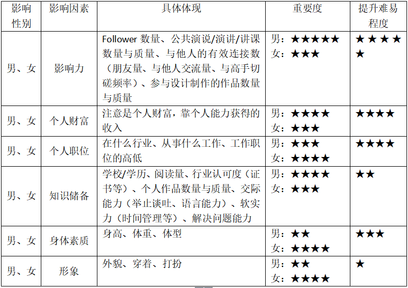

前言
三国时期著名的政治家、军事家，颍阴侯陈群创立“九品中正制”，以家世、行状为人定品，分“上上、上中、上下、中上、中中、中下、下上、下中、下下”九品，从古至今，“阶层”观念深入人心，影响深远。我们从小学习“王侯将相宁有种乎”的“人生而平等”之观念，然而随着深入接触社会的方方面面，并与社会上的形形色色之人打交道，我们内心里已经构建出隐性的“阶层”观念，即使你不承认如此，但或多或少每个人都会为他人“定品”，将他人摆在某一个固化的“阶层”之上。
我们同情弱者，是因为从“高阶层”向“低阶层”的“势流”运动不需要借助外力，我们的“同情”表面上看似人性善良的一面，实则是不费吹灰之力的势能释放。相比之下，我们很难去承认或认同比自己更高阶层的人的成就，因为我们渴望获得像他们一样的成就，渴望阶层跃迁，跃迁的过程是势能的增加，来源于“做功”，势必是痛苦的。我们肯定、欣赏，甚至崇拜、追随极高阶层的人，因为我们知道自己无法达到像他们那样的阶层，没有渴望便没有痛苦，所以我们欣然接受他们“高高在上”。
“高阶层”的人可以轻而易举地获得“低阶层”的资源，渲染自己的“价值观”，所谓“All truth is one”，物理、化学、生物、心理学，万法归一，皆有此道理。
心理阶层
- 心理阶层的定义
我之所以称之为“心理阶层”，是因为这种“阶层”不是公开的、可见的，它是存在于每个人内心的，是一种“隐性阶层”，故谓之“心理阶层”。
陈群指出定品的两个维度：家世、行状。家世，即家庭出身和背景，指父祖辈的资历仕宦情况和爵位高低等，映射到当代即就是父祖辈的官位、职位、财富、社会地位等。行状，即个人品行才能的总评，相当于品德评语，映射到当代即就是个人价值（我后面会谈到个人价值如何评估）。
定品原则上依据的是行状，家世只作参考。但晋以后完全以家世来定品级。出身寒门者行状评语再高也只能定在下品；出身豪门者行状不佳亦能位列上品。于是就行成了当时“上品无寒门，下品无士族”的局面。然而在当代，个人价值的指数级放大可以产生“寒门出贵子”的效果，从而削弱“家世”在阶层定级上的影响，位居“上品”，这个过程极其艰难。
- 影响阶层的因素
影响阶层的因素，从大到小：父祖辈官位→社会地位→财富&职位。
官位。古有“士农工商”的等级划分，“士”排第一，“当官的”在普通老百姓心里位居上位，我们默认“当官的”位置高于百姓，之所以有那么多人挤破头去竞争薪酬低廉的公务员之职，一则图稳定，二则我个人认为大多数年轻人考公务员的动机都来自于“原生家庭”父母的鼓动，“公务员”至少有为“官”的希望，以期提升后辈的阶层。
社会地位。父母是“作家协会主席”、“曲艺家协会主席”、“武术协会主席”、艺术家、画家、作家等，具有一定的社会影响力，由影响力出发构建了一定的社会地位，对阶层的影响仅次于“官位”。
财富&职位。之所以把这两条放在一起，是因为它们对阶层的影响有时候是同等效益的。比如煤老板，在大众眼里可能是一个“有钱没文化”的形象，他可能没有任何正常“职位”，但是他的财富为他带来了阶层提升，但是有一点需要明确，在当今知识型社会中，文化资源高于物质资源，所以煤老板的阶层提升是由物质资源引起的，这种提升的幅度有限。再比如拆迁户，虽然可能拥有极大的财富，但是物质资源对于阶层的提升效果就相当有限。职位，比如父母是高管、大学教授/老师、研究所研究员、报社总编等纯脑力劳动者，阶层高于工厂工人、企业职员、公司雇员等脑力+体力劳动者，更高于清洁工、园艺工、油漆工等纯体力劳动者。
- 阶层带来了什么
每个人在他人心中摆在固定的“阶层”，不同阶层的子女之间的结合将带来大量的家庭矛盾，年轻时候我们相信“爱情的力量”，当“坠入情网”带来的个人界限的短暂崩溃被时间慢慢修复完整后，摩擦与冲突接踵而至。
资源分配不均，二八原则，上层的少数群体拥有整个社会80%的资源，而下层的多数群体仅分享整个社会的20%的资源。
富不过三代，穷不过三代。上层群体的子女很难守住父辈留下的大量资源，势能不断向下层流动（这个过程是轻松的）。下层群体的子女获得了父辈留下的所有资源（越是贫穷家庭，父母越能为了孩子付出一切），并不断吸收来自上层群体的子女释放的资源，势能不断增加，跨越阶层，过程是艰苦的，总体趋势是这样的，但由于个人行状不同，获得的阶层跃迁程度也不同。
行业歧视、道德歧视、价值歧视。评价人的标准从个人能力到价值体系的扩大。最直接的评价依据就是这个人社会影响力→官位的高低→所从事职业/身处行业→挣钱的多少→形象的好坏（仅限年轻人），网络中所谓“看脸”的社会，构成了这个价值体系的基础。形象气质佳确实能带来更多的社会资源，而且我认识的大多数颜值高的人也都特别努力，高颜值、高收入、高学历慢慢成为了进入“高阶层”的敲门砖。
…….
个人价值
- 何为个人价值
我认为个人价值从三方面体现：①个体在社会生产、生活中为社会群体以及群体中的他人做出贡献的多少；②个体能做出多大贡献的能力的大小；③他人对个体做出的贡献的认可程度，他人认为个体能做出贡献的大小。
从个人价值的定义可以看出，个人价值只有在群体中才有意义，人是群居动物，脱离群体谈个人价值毫无意义。“只要我好，一切都好，管他人怎样”这种蠢猪似的思想十分可笑。
- 影响个人价值的因素
由于男性与女性的社会分工不同，所以影响因素的比重有差异（比如个人财富对男人的影响要大于对女人的影响，体型外貌对女人的影响要大于对男人的影响），影响因素中不会包含“父祖辈阶层”，因为这条可能会影响个人的阶层，但根据个人价值的定义，这条不会影响个人价值。

- 个人价值的提升
提升个人价值的过程是循序渐进的，考虑2.2各个因素，表中的因素提升的难易程度从低到高，有人可能会有疑问——“外貌”是天生的，怎么提升啊？相比其他因素，其实形象是最容易提升的，只要不是长得真的“鬼哭狼嚎”，花点心思捯饬捯饬收拾收拾自己，整体形象很容易提升。不少姑娘，底子真的不错，就是不会收拾，也有一些姑娘，底子一般，通过保养与打扮，整体形象得到大幅提升，男生亦如此。实在不行可以去整容，当代社会对于整容已经能够正确看待了。
身体素质。减肥、健身，提升难易度3星，全靠自律，你做不到总有人能做到。
知识储备。读书、总结、写作，职业规划、自我管理，刻意练习，最容易做的个人价值提升点。
身体素质、知识储备是个人职位、个人财富提高的必要条件，不是充分条件，个人职位、财富的提高影响因素很多，是否将个人优势发挥出来，是否做了正确的职业规划，选择了合适的发展路径等。
构建个人影响力。
- 个人价值的体现
个人价值的决定因素不再仅仅是个人行状，个人价值的重新定义带来评价的多维度。从而体现在社会生活的方方面面。
社交隔离。移动互联网的便捷，带来社交的便利，同时也带来了所谓“社交隔离”——信息流频繁进出于每个人通过微信、微博等社交软件构建的自我世界里（信息流：个人信息流量，包括位置信息、个人当前行动、所处环境信息等）。“自我世界”需要有“参观者”（互联网好友）的流入流出，否则慢慢会自我崩塌。朋友圈晒图、晒坐标已经慢慢地变成了个人价值的晾晒，我们需要得到“参观者”的反馈，从中得到满足感。每个人看似与许多人建立了“连接”，实际每个人都是“孤单的个体”。
快餐娱乐。所谓“快餐娱乐”是指娱乐方式简单、娱乐过程短暂、个人价值晾晒的娱乐形式，短视频、秒拍、直播、唱吧、微博、微信等常用软件成为了“快餐娱乐”的承载者与传播者，1~3分钟的视频、git图通过“矛盾冲突”的构建吸引眼球。“快餐娱乐”带来潜思考、碎片化阅读，人们看似获取信息资源的方式变得快捷多样，实则信息资源在我们的大脑里迅速流入流出，真实获取到的有效信息量为0。
以物定人。“物以类聚，人以群分”实际上是“协同作用”的结果，在群体中我们慢慢地以“物”来评价一个“人”，实际上是以“物”来度量个人价值。年轻时候，你长得阳光、会弹吉他会唱歌便能吸引到姑娘，等你过了这个年龄，还用“唱歌”的方式去吸引姑娘，便只是徒劳，每个年龄段我们以不同的“物”来衡量一个“人”。骑自行车的没有开车的个人价值高，“交通工具”成了标准；租房的没有有家产的个人价值高，“房产”成了标准；拿LV包的比COACH包的个人价值高，“饰品”成了标准。记得前几年所谓“削肾买iPhone”吵得特别火，这就是以物定人的表现，“iPhone”成了提升“个人价值”的手段。咖啡馆里拿Mac的比拿ThinkPad的个人价值高，“配件”成了标准。所以说这么多，大家都这么忙，没有人会通过行状去考量你，除非你去找工作可能单位会这么做，直观点你的衣食住行都涉及哪些“物品”，外人以此来定品。
直到哪一天你发现别人在研究讨论的东西你都研究过并且直接或间接地参与实践过，而你依然报着谦虚谨慎的态度不露锋芒的时候，你已经慢慢实现了自我价值的提升，走向了自我实现的道路。